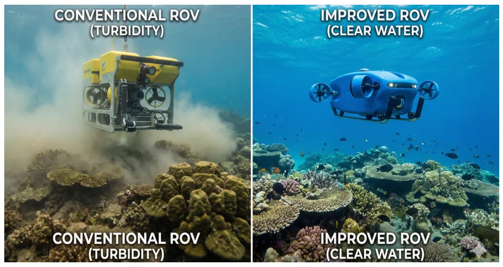
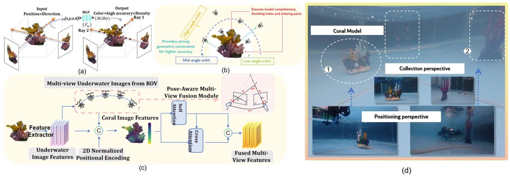
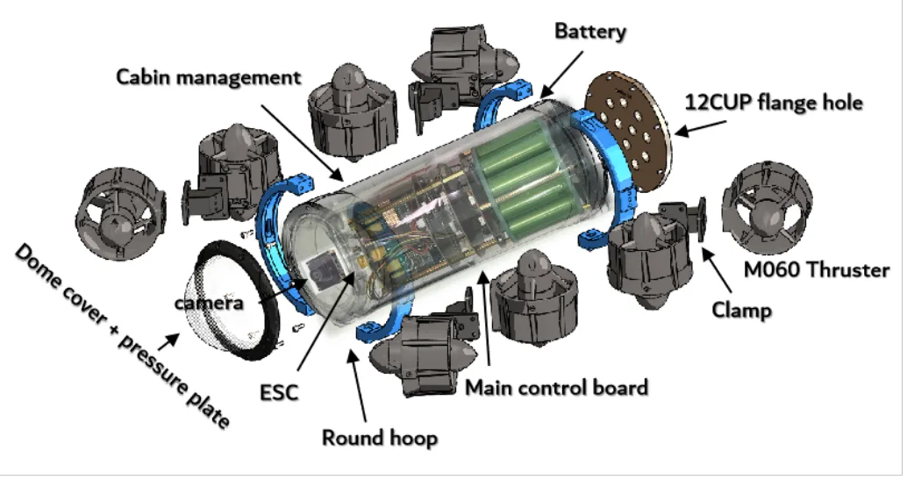
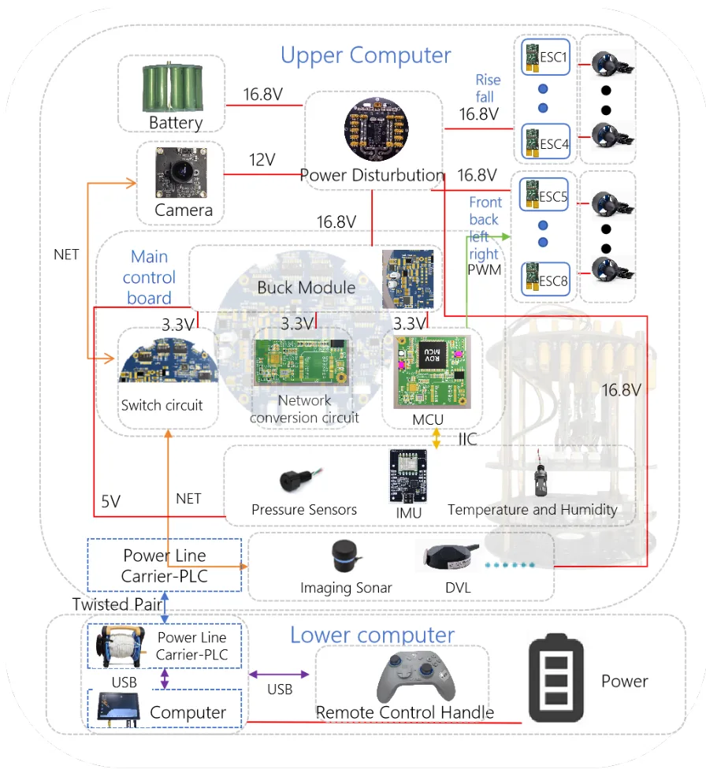
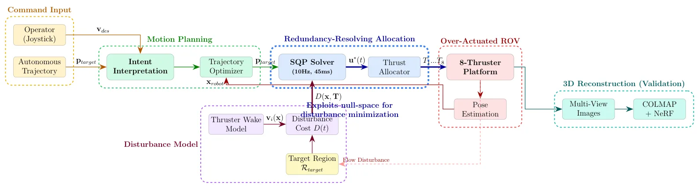
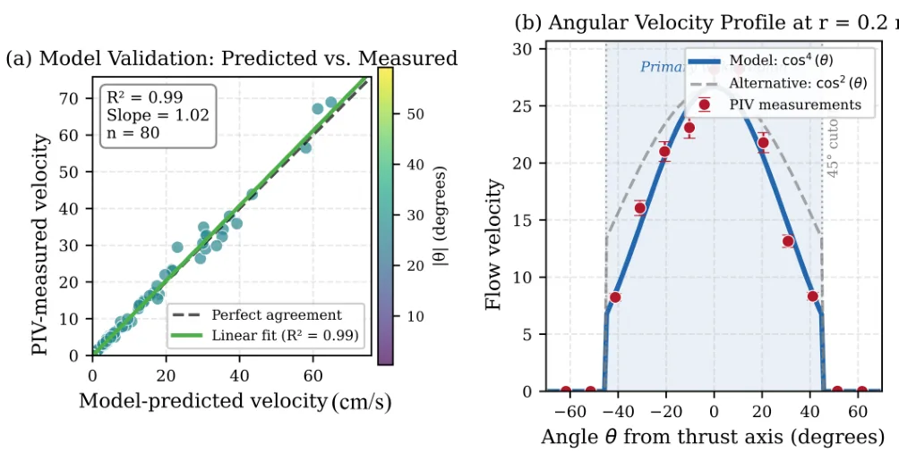
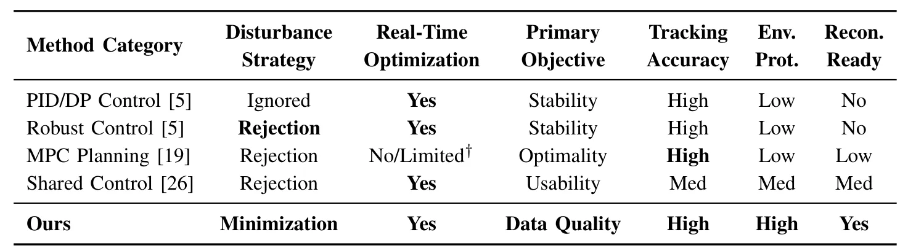
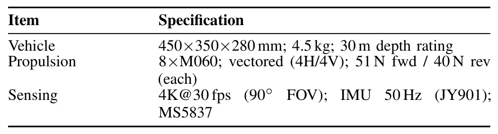
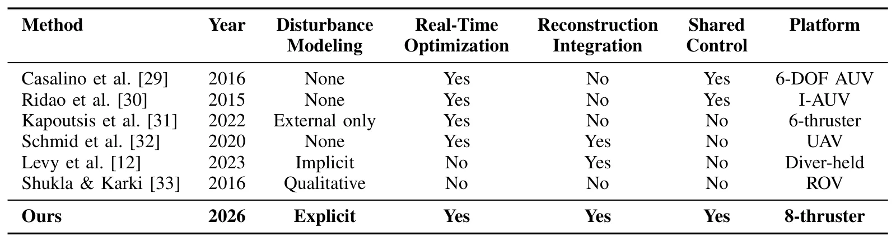

面向高保真三维重建的过驱动水下机器人扰动感知运动规划Disturbance-aware Motion Planning for Over-actuated Underwater Vehicles Exploiting Actuation Redundancy for High-fidelity 3D Reconstruction
不是 SLAM 算法本身，但从 actuation-to-perception coupling 角度服务主动重建和水下机器人感知；实验指标清晰。需核查尾流模型泛化和与主动视角规划的结合。
一句话工作总结
把推进器扰动纳入运动规划目标，通过过驱动冗余提升水下三维重建质量。
摘要
该工作研究水下机器人推进器扰动如何影响视觉重建质量，并利用过驱动 ROV 的推力分配冗余来降低目标区域尾流和沉积物扰动。在八推进器平台上，作者建立基于 actuator-disk theory 的控制导向尾流 proxy，并在满足运动约束的同时搜索推力 null space。实验显示目标区域粒子速度降低 67%，三维重建 RMSE 从 4.3±1.8 mm 降到 1.9±0.4 mm，重建成功率达到 98.5%。
Underwater robots often operate near delicate targets where high-power thrusters resuspend sediments and induce turbulence, degrading image quality at the sensor input. Conventional controllers optimize vehicle-centric objectives, such as tracking and stability, without accounting for the impact of actuation on sensing. We address this actuation-to-perception coupling by exploiting redundancy in over-actuated platforms. For an eight-thruster ROV, multiple thrust allocations can yield the same motion; we search this null space to minimize predicted disturbance in a task-relevant target region while enforcing motion constraints. Our method uses a control-oriented thruster-wake proxy derived from actuator-disk theory with directional attenuation and validated by PIV ($R^2 = 0.99$ near the wake axis; $R^2 > 0.82$ in the primary wake region), together with a real-time redundancy-resolving allocator running at 10 Hz (45 ms/solve). Across 440 trials, the approach reduces target-region particle velocity by 67% ($p < 0.001$), improves 3D reconstruction RMSE by 55% versus a disturbance-unaware baseline ($1.9 \pm 0.4$ mm vs. $4.3 \pm 1.8$ mm), and achieves a 98.5% reconstruction success rate. The framework supports autonomous scanning, which is quantitatively evaluated, and operator-assisted inspection, which is demonstrated in the supplementary materials.
中文解读摘录
- 链接：https://arxiv.org/abs/2607.07139 ｜ PDF：https://arxiv.org/pdf/2607.07139
- 中文题名：面向高保真三维重建的过驱动水下机器人扰动感知运动规划
- 关键信息：针对八推进器 ROV，利用过驱动平台的推力分配冗余，在保持运动约束的同时搜索 null space 以最小化目标区域的推进器尾流/沉积物扰动；论文报告目标区域粒子速度降低 67%、三维重建 RMSE 降低 55%、重建成功率 98.5%。
- 为什么值得看：它不是传统 SLAM 算法，而是把 actuation-to-perception coupling 显式纳入规划/控制，用“为了重建质量而规划运动和推力”的思路解决水下感知退化。
- 需要核查：尾流 proxy 与真实浑浊水体/海流的泛化、10 Hz allocator 在复杂轨迹中的稳定性、与主动视觉/next-best-view 重建规划的结合，以及是否能扩展到非过驱动平台。
图表/页面预览
{kind=link}

{kind=link}

{kind=link}

{kind=link}

{kind=link}

{kind=link}

{kind=link}

{kind=link}

{kind=link}
